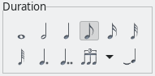

Now we are going into the details: Edit measures, notes and tablatures.
Measure navigation
With the first four items in the Measure menu you can navigate through the song. You can also use keyboard shortcuts for this.
Edit measures
Measure → Add Measure adds one or more measures before or after the current cursor position or at the end of the song in all tracks, depending on your choice in the dialog that opens.
Measure → Clean Measure removes all notes from the given measure(s) in the current track. The measure(s) itself will be preserved.
Measure → Remove Measure removes the given measures(s) from all tracks. The song will in effect be shortened by the given number of measures(s).

Measure → Copy Measure will copy the given measures(s) to the clipboard. If your song has more than one track, you can choose to copy the given measure(s) only from the current track or from all tracks. You can also specify whether the markers should be copied or not.

Measure → Paste Measure will insert the previously copied measure(s) once or multiple times, depending on the given "Paste Count".
If you previously only copied measures from one single track, these measures will be inserted in the currently opened track at the current cursor position.
If you copied measure(s) from all tracks, then the notes and tablatures will be inserted in all tracks. If you paste the measure(s) into another song, the tracks will be filled up from the first to the last track, as long as there are tracks left in the destination song.
If you choose to paste the notes and tablatures into the current measure(s), all present content will be overwritten. In case you select "Paste in new Measure", the notes and tablatures will be pasted to newly inserted measure(s) after the current cursor position. Your song will now be longer than before.
Notes and beats
Finally, the Beat menu lets you edit the single sounds: Notes and tablatures.
Note Duration
The note duration is set in the submenu Beat → Duration or the "Duration" edit toolbar section.
The first seven entries simply change the selected note(s) to whatever you select, ranging from whole note to sixty-fourth note. This comes in handy if you need to make a change that is more than one note increment (i.e., quarter note to sixteenth note). You can alternately use the +/- keys on a standard numeric keypad to move one increment at a time.
The next three menu entries will change the note’s values to dotted, double-dotted, and a wide variety of "division type" values.
If you do not understand the difference between the various note durations, you may want to research it a bit before you begin editing tabs, as you may find yourself quickly getting lost. Any basic music theory guide should cover these topics. A good starting place (as always) is the Wikipedia’s pages on music theory and music notation:
- https://en.wikipedia.org/wiki/Music_theory
- https://en.wikipedia.org/wiki/List_of_musical_symbols
Clicking on the menu entry Beat → Tied Note or the last icon in the Duration toolbar will "tie" the currently selected note to the one before it. This feature basically takes the value of two notes and combines them into one. The most common use for this feature is when you have a note that begins in one measure and ends in the next. Tying notes is really just a way of keeping the score clean and organized. If you need more information, you may want to research musical notation via the links above.
Note dynamic
By selecting a different icon than the current in the Dynamic toolbar section or the Beat → Dynamic submenu, you change the dynamics of the note you are editing. They gradually scale from Piano Pianissimo (ppp), which is the most silent, to the Forte Fortissimo (fff) which is loudest.

Note effects
The effects in the Effects toolbar and the Beat → Effects submenu are applied to the note under the cursor positioned in the tab. Make sure you have enabled the tablature view to use these effects (menu View → Show Tablature).

All note effects are described in detail on a separate page.
Edit the whole beat
Beat → Chord → Insert Chord (the first icon in the Beat toolbar) gives you access to the Chord Editor. The Chord Editor is a handy time-saving tool used to search, build, and insert chord formations into your tablature.

You can enter previously saved chords directly into your tablature from the Chord Library, accessible from the small down arrow on the right of the Chord Editor icon in the toolbar or from the Beat → Chord submenu:

The menu entry Beat → Insert Text (or the "T" icon) lets you add a text note to the selected beat. It is most often used as a note to the player or a comment to the tab. It is displayed above the note it is assigned to.
With Beat → Upstroke/Downstroke (or the two arrow icons) you can add up- or downstroke to the selected beat.
Shift beats around
- Beat → Insert Rest Beat inserts one rest before the current cursor position. This only works within a single measure in the current track as long as there is an empty beat at the end of the measure. All notes on the right of the cursor are shifted to the right.
- Beat → Delete Note or Rest: The result of this function depends on the content of the beat:
- If no notes are selected, only the note on the current cursor position is deleted.
- If one or more entire beats are selected, all notes are deleted in the selected area.
- If the selected beats are already empty (i.e. they only contain a pause), all notes on the right of the selection are shifted to the left. As "Insert Rest Beat", this function only works within one measure.
- Beat → Clean Beat: Same as "Delete Note or Rest", but if the selected beats are already empty, it simply does nothing.
- Beat → Auto Stems/Stems up/Stems down: Here you can control the orientation of the note stems. You can let TuxGuitar decide about the stem orientation or force the note stems in the beat where the cursor is to go up or down.
- Beat → Semitone up/down: These menu items shift all notes in the selected beats one semitone up or down, as log as all notes can be shifted.
- Beat → Shift one String up/down let you shift all selected notes one string up or down, but only if all selected notes can be shifted.
- Beat → Move one Beat left: Cleans the beat at the current cursor position in the current track and moves all beats after the cursor one beat to the left.
- Beat → Move one Beat right: Inserts a rest beat at the current cursor position and moves all beats after the cursor one beat to the right.
- Beat → Custom Beat Move: Here you can move all beats after the cursor to the left or to the right and also control the duration of the displacement.